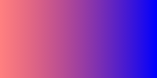
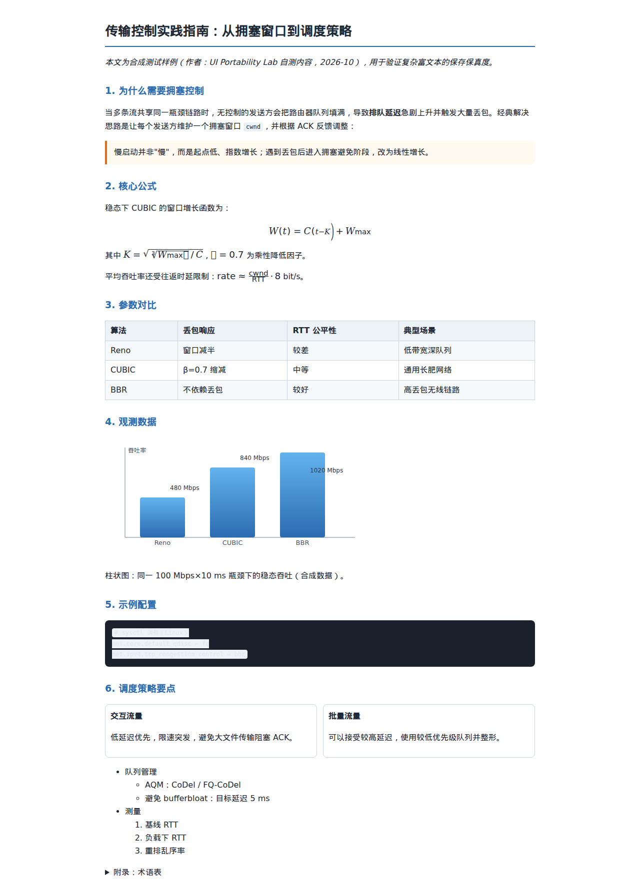
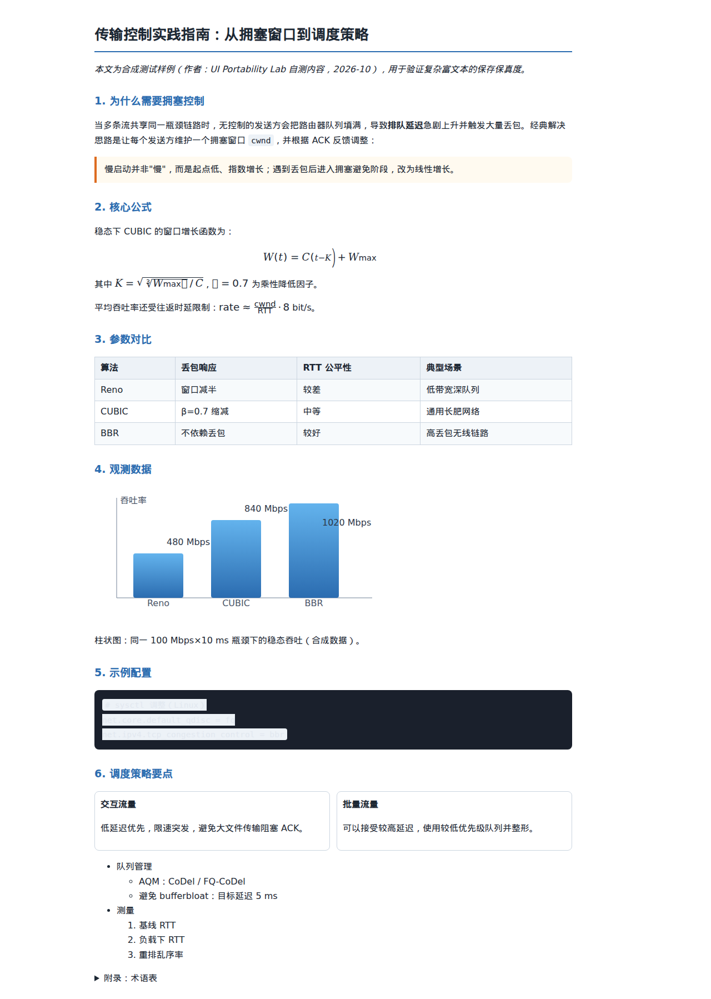

所有内容均为自建合成样例。实际 Chromium MV3 文件导入、下载、离线打开。Windows 与 Obsidian GUI 未验证。
端点颜色与透明度一致，逐像素通道差异 0。机器结果 · 独立 HTML

来源本身有数学字形缺失和代码背景低对比，不能归咎导出器；未生成替代公式。导入使用固定 16px 基准，全页不宣称像素等价。


默认样式与 SVG 属性覆盖 · 26000px 自足 JSON · Markdown 实际离线验证 · 独立审查 · 完整报告